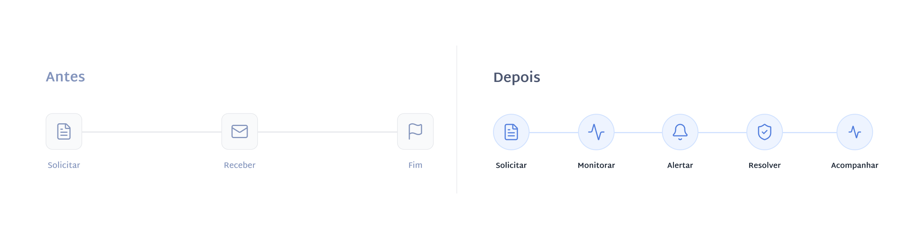
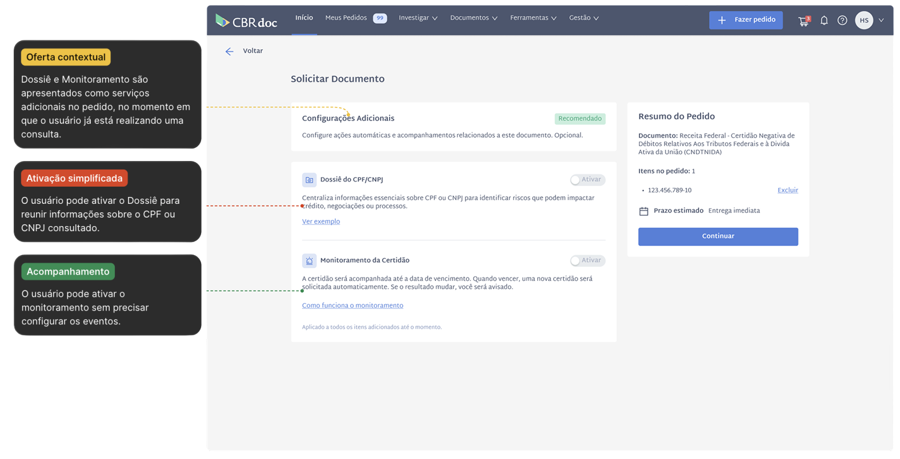
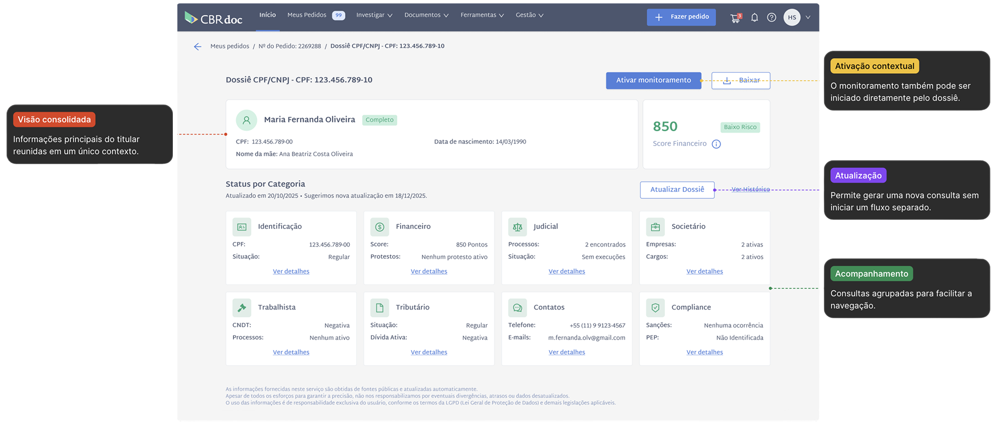
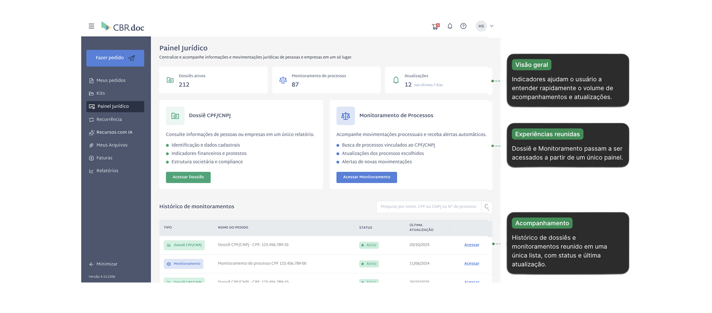

Plataforma jurídica CBRdoc

Nova experiência de monitoramento
A CBRdoc estava evoluindo de uma experiência baseada em consultas e solicitações pontuais para uma plataforma de acompanhamento contínuo. Depois de encontrar e consultar um processo, o usuário ainda precisava voltar ao sistema para verificar novas movimentações.
O projeto de Monitoramento buscou fechar esse ciclo, permitindo acompanhar processos continuamente e receber alertas quando houvesse novas movimentações. A experiência também conectava a ativação do monitoramento ao fluxo de uso existente, tornando o acompanhamento uma extensão natural da consulta.
Atuei na estruturação da jornada de monitoramento, definição da lógica de ativação e organização da experiência de acompanhamento dentro da plataforma. O objetivo de negócio era aumentar a ativação e abrir caminho para uma nova fonte de receita recorrente.
Contexto do produto
A CBRdoc tinha uma experiência predominantemente transacional: o usuário solicitava ou consultava uma informação e acompanhava aquele pedido até sua conclusão. A plataforma já oferecia diferentes formas de acesso a informações jurídicas e documentais, mas o acompanhamento após a consulta ainda era limitado.
A plataforma já oferecia:
- Solicitação de certidões
- Acompanhamento de pedidos
- Dossiê com informações por CPF/CNPJ
- Pesquisa de processos
O desafio era ampliar esse modelo para que a plataforma continuasse útil depois da consulta, permitindo acompanhar mudanças relevantes sem depender de novas consultas manuais.
Essa mudança fazia parte de uma evolução maior do produto: sair de uma lógica centrada em consultas e solicitações pontuais para uma experiência de acompanhamento contínuo. Nesse contexto, o Monitoramento de Processos passou a funcionar como uma extensão da jornada de consulta, permitindo que o usuário continuasse acompanhando um processo depois de encontrá-lo.
Problema de experiência
Após concluir uma solicitação, o usuário deixava de ter suporte da plataforma para acompanhar mudanças relacionadas aos documentos e processos consultados.
O controle passava a depender de ferramentas externas, consultas recorrentes e acompanhamento manual, tornando a experiência fragmentada e reativa.
Essa dinâmica gerava dificuldades principalmente em cenários que exigiam acompanhamento frequente de regularidade documental e movimentações processuais.
Principais fricções identificadas
- Ausência de alertas automáticos
- Dependência de controle manual
- Necessidade de consultas repetidas
- Falta de visão consolidada por CPF/CNPJ
- Baixa continuidade da experiência após o pedido
A hipótese era de que muitos usuários só voltavam à plataforma quando já existia um problema ou uma urgência operacional.
Estratégia de jornada
O principal desafio do projeto foi integrar o monitoramento à estrutura existente da plataforma, além de criar um módulo para ele.
A funcionalidade foi distribuída estrategicamente ao longo da jornada: no momento da solicitação, no acompanhamento por CPF/CNPJ e na visão de pedidos no módulo.
A ideia era manter coerência com o modelo mental do usuário e oferecer a ativação no momento de maior intenção.

Estrutura da experiência
Ativação no momento certo
O monitoramento foi integrado ao fluxo de checkout de certidões e pesquisas processuais, aproveitando o momento em que o usuário já demonstrava preocupação com regularidade documental e possíveis riscos.
Em vez de depender de uma configuração posterior dentro da central de monitoramento, a ativação acontece no contexto da própria solicitação, com o objetivo de facilitar a adesão.
A decisão também evitava que o monitoramento fosse percebido como uma funcionalidade separada da jornada principal da plataforma.

Dossiê
O dossiê já existia como uma funcionalidade da plataforma, reunindo informações de diferentes consultas em uma visão única por CPF ou CNPJ. Durante o projeto, ele passou a desempenhar um papel importante na jornada de monitoramento.
Além de centralizar dados cadastrais, processos e indicadores, o dossiê passou a exibir o status do monitoramento e permitir novas ações a partir do mesmo contexto, evitando que o usuário precisasse alternar entre diferentes áreas da plataforma.
Dessa forma, cada CPF ou CNPJ passou a ter um ponto único de consulta e acompanhamento, reforçando a continuidade da experiência.

Painel Jurídico
O Painel Jurídico foi criado para reunir, em um único lugar, as duas principais funcionalidades de acompanhamento jurídico da plataforma: Dossiê e Monitoramento.
Antes, essas experiências estavam distribuídas em áreas diferentes. Com a criação do novo painel, o usuário passou a ter uma visão geral dos dossiês e monitoramentos ativos, além de um histórico para localizar e acessar cada acompanhamento.
A estrutura também facilita o retorno ao monitoramento criado, permitindo que o usuário consulte suas atualizações sem precisar refazer a busca ou navegar por diferentes áreas da plataforma.
